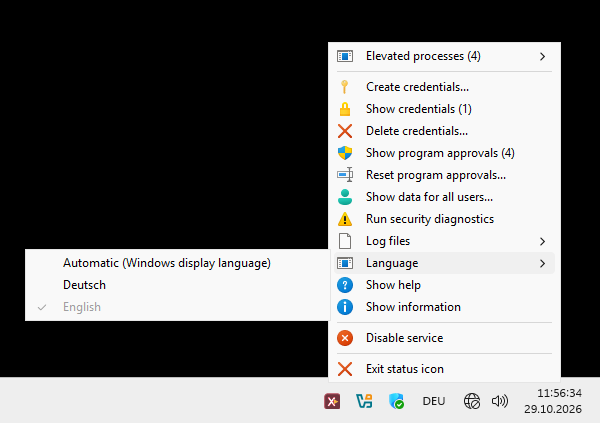

Invocations without account names and passwords
After setup, the actual program, command, or script invocation is sufficient for typical launches. Account names and passwords need not be included in scripts or shortcuts.
eXecute Under User Context
xucRun runs programs, commands, and scripts under a selected Windows account—with elevated privileges when needed. The user remains in the current Windows session; after setup, the account name and password do not need to be entered again for every matching invocation.
xucRun is open-source software under development. The current state may contain defects, differ from the described behavior, and change. It is intended for experienced home users and developers on self-managed Windows PCs, not for systems requiring an elevated level of protection. Use is at the user's own responsibility. Read about intended use, protection boundaries, and liability.
PS C:\Tools> xucRun.exe regedit.exe
C:\Tools>xucRun.exe regedit.exe
Windows functionsAccount switching and UAC
Separate storageNo password transfer to target programs in the intended workflow
Interactive approvalsSelected in the dialog as one-time or reusable
Purpose and functionality
A central use case is performing selected administrative actions from a standard user account without switching to a separate administrator session. Only the requested execution runs under the selected target account; the signed-in user's account and privileges remain unchanged. The target account can be a standard account or belong to the local Administrators group and then be used with elevated privileges when needed.
After setup, the actual program, command, or script invocation is sufficient for typical launches. Account names and passwords need not be included in scripts or shortcuts.
xucRun handles program paths, working directories, batch files, and common shell special characters and passes them to the target program. Invocations can originate from consoles, scripts, shortcuts, and configurable file managers.
Dialogs are used to set up and select accounts and to approve requested executions.
xucRun uses existing Windows functions for account switching and UAC elevation in a common workflow for requested executions.
Safeguards
xucRun uses Windows APIs to store passwords. In the intended workflow, passwords are not passed through the command line or to the target program. Password entry and approvals take place on a separate Windows desktop. A per-user security identifier helps users recognize subsequent xucRun dialogs there.
Protection boundary: On a compromised system, xucRun cannot provide comprehensive protection. In addition, calling scripts and configuration files must be trusted and protected against unauthorized modification.
If Windows requires UAC confirmation for a specific elevation, it remains part of the launch process. xucRun does not replace it with its own approval.
Approvals can be bound specifically to the final resolved path and SHA-256 hash of a target program or deliberately kept general. If a bound program file changes, the existing approval no longer matches. General approvals instead allow launches without binding them to a specific target program.
xucRun uses stored credentials only for a launch covered by an active approval or approved by the user in the current dialog. Without approval, the launch does not proceed.
Longer and broader approvals avoid repeated xucRun approval decisions more often. Shorter approvals or approvals bound more precisely to a program, invocation, and target account limit how broadly they can be reused. For a reusable approval, this differentiated selection generally needs to be made only once.
Reusable approvals can additionally be bound to the arguments, working directory, and launch visibility. Directly recognized scripts can be included in this binding; content loaded later is not included.
Installation and setup
The Core installer automatically creates a local xucRun certificate on your computer and uses it to sign the components to be installed. Before installation and during later use, xucRun verifies the signatures of the matching components. This makes subsequent changes detectable while keeping permanent trust limited to your computer; the developer certificate is not installed there as a trust anchor. The local-signing guide explains the details.
The installer sets up all required xucRun components and can also add xucRun to the Windows program search path. You can then invoke xucRun.exe from new consoles without specifying its full path.
Required credentials are requested on a separate Windows desktop when needed and can also be set up in advance.
If no matching approval is active, the launch is confirmed interactively.
xucRun.exe regedit.exeUsage examples
These examples assume that xucRun is installed, the required accounts have been set up, and xucRun was added to the Windows program search path during installation. Without this entry, use the full path "%ProgramFiles%\xucRun\xucRun.exe". If no matching approval exists, xucRun asks interactively before launch.
If exactly one administrator account is stored, the target command is sufficient. Any UAC confirmation required by Windows for this elevated launch remains required.
xucRun.exe regedit.exe
/user: selects the specified account without xucRun requesting additional elevation itself.
xucRun.exe /user:DOMAIN\User notepad.exe
Paths, arguments, and common shell special characters are passed to the batch file in a controlled way.
xucRun.exe "C:\Scripts\Maintenance & Check.bat"
Without a target program, xucRun detects the calling console, starts the same console type in the selected account and elevation context, and preserves the current working directory. Command Prompt, Windows PowerShell, PowerShell, and TCC are supported.
xucRun.exe
xucRun.exe /user:<Account>
xucRun can be invoked from configurable file managers, scripts, desktop shortcuts, and other applications to run programs, commands, and scripts under a selected account and, when needed, with elevated privileges. The documentation includes, among other examples, a complete configuration example for Total Commander.
Optional control interface
xucRun Tray displays a status icon in the notification area of the Windows taskbar next to the clock. Its menu provides access to the operating state, elevated processes, credentials, approvals, security diagnostics, and logs without requiring the corresponding management commands to be entered manually.
The Tray is helpful during setup, status inspection, and later configuration changes and can run continuously or only when needed. xucRun and its broker service remain fully usable without the Tray installed or running.

Management commands, backups, update behavior, and further technical details are covered in the README.
Source code and documentation are publicly available so that the technical measures, their limitations, and remaining risks can be reviewed. Publication is neither a security guarantee nor evidence of an independent audit; xucRun has not been independently audited or certified. Before use, review the source code, SHA-256 checksums, intended use, and documented security limitations, and use xucRun only if the remaining risk is acceptable for your use case.
xucRun uses Windows APIs to store passwords, approvals, security markers, associated metadata, and created backups on the local computer. Backups may also contain a description entered by the user. In the intended workflow, stored passwords and security markers are not passed to normally launched programs. These product data can be removed completely during uninstallation.
The Windows service manages stored passwords separately from the normally launched xucRun program. It checks every requested launch and starts the program under the selected account. Required approvals and UAC prompts remain visible to the user and must still be confirmed. The service creates no additional privileges.
xucRun supports Windows 10 and Windows 11 on x64 systems. Other Windows versions and ARM64 systems have not been tested and are not supported. The latest Microsoft Visual C++ v14 Redistributable for x64 is also required; xucRun needs no additional third-party service. If the runtime is missing, the installer offers download, selection of an existing vc_redist.x64.exe, or cancellation.
The installer sets up the required program components and the Windows service. Required target accounts and credentials can be configured in advance or selected and entered interactively when first needed. The required xucRun approval is also selected in a dialog when needed.
Typical use does not require configuration files to be edited manually. The optional xucRun Tray provides graphical access to credentials, approvals, status information, security diagnostics, and logs. The same management tasks can also be performed using the documented commands; xucRun remains fully usable without the Tray.
xucRun supports both starting points. When signed in as a standard user, selected programs can be launched under another configured standard or administrator account. An administrator account can be used with elevated privileges when needed. The signed-in account remains a standard user.
A standard account cannot be launched with administrator privileges under its own identity. For administrative actions, xucRun therefore uses a separate account from the local Administrators group; the signed-in standard account receives no additional privileges. Users who already work from an administrator account and only want to elevate that same account can also use the built-in Windows UAC functions.
If the signed-in user is a member of the local Administrators group, xucRun can use that account for administrative launches; any UAC confirmation required by Windows remains necessary. Programs can alternatively be launched under another configured account.
xucRun changes neither account types nor group memberships. It uses the existing Windows configuration for each requested launch.
xucRun does not replace these Windows functions but combines them in a reusable workflow. After setup, credentials for target accounts can be managed separately and requested executions can be approved selectively. Typical launches then require neither account names nor passwords in scripts, shortcuts, or command lines and still take place in the existing Windows session. Any UAC confirmation required by Windows remains necessary.
No. xucRun combines existing Windows functions, creates no additional privileges, and does not replace UAC with its own approval. For elevated cross-account launches, Windows must provide a confirmable UAC path for the selected administrator account; otherwise, the launch remains blocked. This can particularly affect the built-in Administrator account when Admin Approval Mode is disabled.
The published package is signed with a self-signed developer certificate. Without local re-signing, this certificate would have to be installed permanently as a trusted root certification authority and trusted publisher on every target computer. Windows would then trust every file signed with the same developer certificate.
The Core installer verifies the digital signatures, creates or reuses a local certificate with a non-exportable private key, and re-signs the components. Permanent trust is thereby limited to the individual computer. Local signing does not establish the origin of the download, so the published SHA-256 checksum must be compared first. Local signing in detail
xucRun for Windows
xucRun and the optional Tray are published as separate open-source projects on GitHub.
Installation files, checksums, and release notes are listed on the download page. Source code, license texts, and technical documentation are maintained in the respective GitHub repositories.
Important: Before downloading or using the software, read the information about intended use, security limitations, and potential risks.